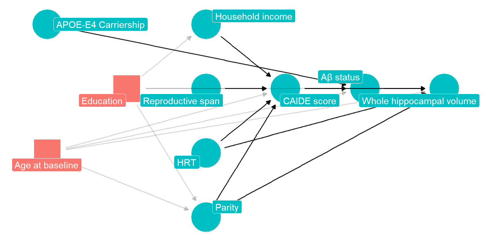
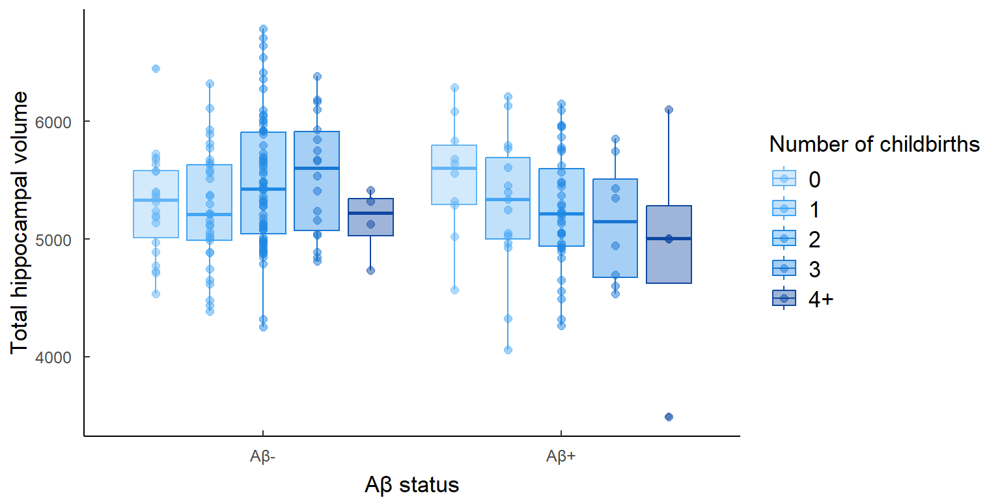
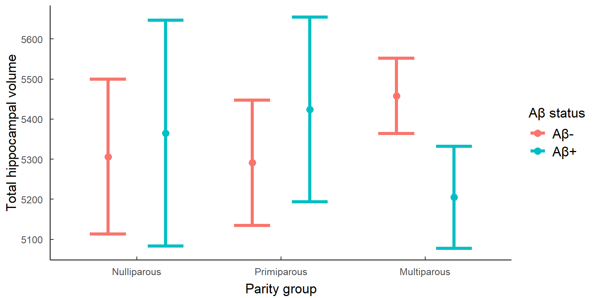
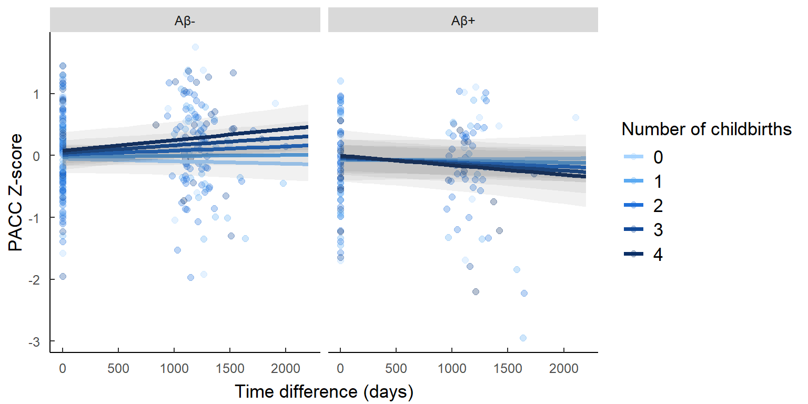
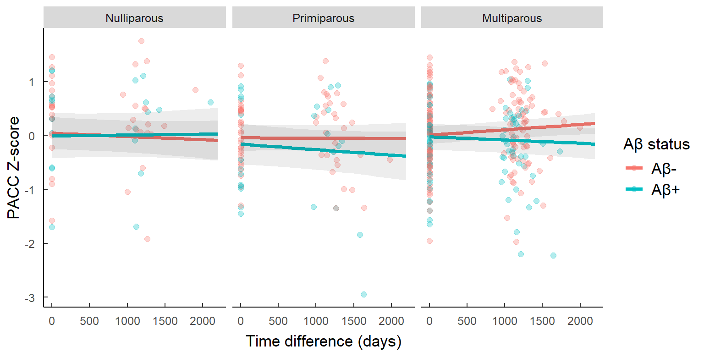
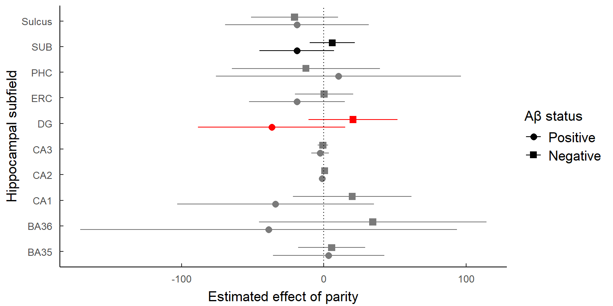

Parity and AD specific neurodegeneration
1 Abstract
300 words
2 Introduction
3 Methods
3.1 Study design
This study was realised within the context of the The ALFA+ project, a longitudinal observational cohort of healthly middle aged adults. This project currently takes place in the city of Barcelona, Spain, at the BarcelonaBeta Brain Research Center. Visit 1 was collected between 2013 and 2015, and Visit 2 between 2016 and 2019 Visit 3 is still undergoing. The ALFA study protocol was approved by the Independent Ethics Committee Parc de Salut Mar Barcelona (and registered at Clinicaltrials.gov, NCT01835717). For a more detailed description of the cohort see Molinuevo et al.[1]. Our sample includes all the women of the ALFA+ cohort, who were all postmenopausal at visit 1.
3.2 Participants
In brief, inclusion criteria were being cognitively normal, Spanish and/or Catalan-speaking, being aged between 45 and 74 years and agreing with the study procedures and tests. A close relative was involved in the volunteer’s functional evaluation and both of them had to grant their written informed consent. Exclusion criterias Exclusion criteria were (1) Cognitive performance falling outside the established cutoffs, (2) a Clinical Dementia Rating above 0, (3) major psychiatric disorders (according to DSM-IV-TR), (4) Severe auditory and/or visual disorder, neurodevelopmental and/or psychomotor disorder, (5) Significant diseases that could currently interfere with cognition, (6) neurological disorders, (7) Brain injuries and (8) a suspected pattern of family autosomal dominant AD.
In addition to the above exclusion criteria, women with history of cardiovascular related gestational disease, such as preeclampsia, were excluded from our sample for analysis.
Participants were recruited via advertisement campaigns in newspapers and followed-up via email and phonecalls.
3.3 Procedures
3.3.1 Demographics
Demographic data was collected via oral questions administered by a clinician. Sex was self reported, as well as gender and participants could choose from three options: male, female, or … Race and ethnicity were also self-reported.
Reproductive variables, such as number of biological kids, age at menopause, age at menarche and number of abortions, were self-reported at the baseline visit. In the subsequent visits, participants were also asked about hormonal replacement therapy.
Social variables such as years of education, household income, occupational attainment and civil status were also self-reported at baseline visit.
3.3.2 Imaging data preprocessing
GMV changes were computed voxel-wise using the pairwise longitudinal registration implemented in the statistical parametric mapping software (SPM, version 12) (https://www.fil.ion.ucl.ac.uk/spm/software/spm12/). The procedure involves a high-dimensional warping between consecutive T1-weighted scans, combining diffeomorphic and rigid-body registrations and incorporating a correction for field inhomogeneities. This procedure yields for each subject a parametric whole brain map encoding at each voxel the local tissue deformations that have occurred over time [2] . Individual deformation maps were inspected for sample homogeneity using the computational anatomy toolbox (CAT12) (http://dbm.neuro.unijena.de/cat/) and normalized to the Montreal Neurological Institute (MNI) space using diffeomorphic image registration with DARTEL30 and spatially smoothed with an 8-mm full width at half maximum (FWHM) Gaussian kernel before being submitted to group statistical analyses.
3.3.3 Automatic Segmentation of Hippocampal Subfields
Automatic Segmentation of Hippocampal Subfields (ASHS) software [3] was used on the T1 and inversion recovery (IR) images to segment the hippocampal formation in the following sub-regions: Brodmann areas 35 and 36, cornu Ammonis (CA) 1, 2 and 3, dentate gyrus (DG), entorhinal cortex (ERC), parahippocampus (PHC), subiculum (SUB), and sulcus (SUL). All segmentations were visually inspected before proceeding with the statistical analyses.
3.3.4 Lumbar puncture
CSF was collected by lumbar puncture between 9 and 12 a.m. in polypropylene tubes. Samples were processed within 1 hour and centrifuged at 4°C for 10 minutes at 2000 g, stored in polypropylene tubes and frozen at -80°C. Core AD biomarkers (namely Ab42, Ab40, total Tau, and p tau) and other molecules of interest (such as YKL-40, neurogranin and Ab oligomers) were analyzed and determined in Prof. Kaj Blennow’s laboratory (Institute ofNeuroscience and Physiology, Department of Psychiatry and Neurochemistry, The Sahlgrenska Academy at the University of Gothenburg, Sweden).
3.3.5 Cognitive measures
The Preclinical Alzheimer Cognitive Composite (PACC) was developed to detect subtle cognitive changes in individuals who may be in the pre-clinical stages of AD [4], and includes elements of the Memory Binding Test, the Coding subtest of WAIS-IV, and semantic fluency. Z-scores were computed for Visit 1 and 2.
3.4 Statistical analyses
All statistical analyses were conducted using R version 4.5.1.
3.4.1 Variable definition
Parity, defined as the number of biological children, was modeled as a continuous variable (0, 1, 2, 3, 4+). Parity was also modeled as a categorical variable (nulliparous, primiparous, multiparous) for sensitivity analyses but since this greatly reduces our statistical power we mainly considered direction of slope and effect size but not statistical significance. Time was calculated as the number of days between Visit 1 and Visit 2 for MRI scans and cognitive testing sessions. Aβ positivity was defined as a binary variable based on the CSF Aβ42/Aβ40 ratio, with participants classified as Aβ-positive if the ratio fell below the established cutoff of 0.071 pg/mL [5].
3.4.2 Covariate selection
We used directed acyclic graph (DAG) methodology and Pearl’s backdoor criteria to identify confounders. Based on this approach, all models were adjusted for age at baseline and years of education, as these variables influence both the exposure and outcome, therefore making them confounders in our analysis. Models were additionally adjusted for APOE4 carrier status given the enrichment of ALFA+ participants for AD genetic risk factors. Models with hippocampal volumes as outcomes were further adjusted for total intracranial volume (TIV).
3.4.3 Cross-sectional analyses
We conducted simple linear regressions using Visit 1 data to examine cross-sectional associations between parity, Aβ positivity, and hippocampal volume. Parity was modeled both as a continuous variable and as a categorical variable (nulliparous, primiparous, and multiparous). Total hippocampal volume served as the continuous outcome variable. All models included age at baseline, APOE4 carrier status, years of education, and total intracranial volume as covariates.
3.4.4 Longitudinal analyses
Mixed-effects models were used to assess longitudinal effects on hippocampal volume. These models included a three-way interaction term between parity, Aβ positivity, and time (interval between Visit 1 and Visit 2), with the same covariates as the cross-sectional models.
3.4.5 Post-hoc analyses
Post-hoc linear regressions were performed on Visit 1 data to explore the interaction between parity and Aβ positivity on individual hippocampal subfield volumes. Given the exploratory nature of these analyses, results are reported without correction for multiple comparisons.
3.4.6 Missing data
Data imputation methods were implemented using the mice package in R (v.3.18.0) on covariates, but not exposure or outcome variables. For continous variables, predictive mean matching with 5 donors was used. For categorical variables, logistic regression was used.
4 Results
4.1 Descriptive results
| Number of childbirths | N | 0 N = 391 |
1 N = 541 |
2 N = 1261 |
3 N = 271 |
4+ N = 81 |
p-value2 |
|---|---|---|---|---|---|---|---|
| Age at first visit, Mean (SD) | 254 | 58.6 (55.3, 62.3) | 59.9 (56.7, 63.7) | 62.6 (58.4, 65.1) | 61.2 (58.1, 64.8) | 66.2 (61.5, 68.6) | <0.001 |
| Aβ status, Count (%) | 229 | 0.8 | |||||
| Aβ- | 23 (70%) | 34 (69%) | 72 (64%) | 19 (70%) | 4 (50%) | ||
| Aβ+ | 10 (30%) | 15 (31%) | 40 (36%) | 8 (30%) | 4 (50%) | ||
| APOE-E4 carrier, Count (%) | 254 | 0.4 | |||||
| Carrier | 19 (49%) | 23 (43%) | 72 (57%) | 13 (48%) | 3 (38%) | ||
| Non-Carrier | 20 (51%) | 31 (57%) | 54 (43%) | 14 (52%) | 5 (63%) | ||
| Time between visits (years), Mean (SD) | 203 | 3.26 (3.03, 3.48) | 3.42 (3.13, 3.72) | 3.24 (3.01, 3.48) | 3.23 (3.03, 3.74) | 3.32 (2.93, 3.76) | 0.13 |
| Education (years), Mean (SD) | 254 | 17.0 (12.0, 18.0) | 12.0 (10.0, 15.0) | 12.0 (10.0, 16.0) | 13.0 (10.0, 18.0) | 11.0 (8.0, 12.0) | 0.013 |
| 1 Median (Q1, Q3); n (%) | |||||||
| 2 Kruskal-Wallis rank sum test; Fisher’s exact test | |||||||
254 female participants from the ALFA+ project were included in our analyses. Visit 1 included MRI data from 241 participants and cognitive testing from 234 participants. Visit 2 included MRI data from 203 participants and cognitive testing from 203 participants. Average time between visits was 3.32 years.
Table 1 shows demographics and characteristics of the ALFA+ cohort for all aprticipants included in Visit 1, grouped by parity. Participants with higher parity were significantly more likely to be older. No difference was seen between groups regarding Aβ status and APOE-ε4 carriership.
- Do we have dropout data for ALFA? and reasons for dropout?
4.2 Whole Hippocampal volume
No significant main effect of parity on hipocampal volume were found cross-sectionally at at Visit 1. The interaction between parity and Aβ status was significant (β = -137.727, SE = 65.209, p = 0.036), showing that Aβ- women exhibited a positive relationship between parity and hippocampal volume, whilst Aβ- women showed the opposite (Figure X).

Splitting women between nulliparous, primiparous and multiparous seemed to indicate that this interaction might only take effect in multiparous women (Figure x).

We found no significant independent effect of parity on whole hippocampal volume trajectory. However, a significant effect of parity and Aβ interaction was found (β = -134.103, SE = 65.295, p = 0.041), such that Aβ- women showed a positive relationship between parity and hippocampal volume, whilst Aβ- women showed the opposite. This association was independent from time.
Again, splitting our subjects between nulliparous, primiparous and multiparous showed the direction of this interaction might only take effect in multiparous women.
4.3 Cognitive trajectory
No main effect of parity or interaction between parity and Aß status was found on PACC when looking only at baseline data.
In the context of longitudinal data, introducing a 3-way interaction between parity, time and Aß positivity revealed a moderate yet significant effect on PACC z-score change (β = -9.636^{-5}, p=0.033). Results suggest that Aß- women showed lesser cognitive decline with a higher number of children, and Aβ+ women the opposite (Figure X).

Reproducing the analysis using our 3 parity groups showed that the direction of the interaction was present in both primiparous and multiparous groups, but the estimate was bigger in the latter one (Figure X).

4.4 Post-Hoc
4.4.1 Hippocampal subfields
No significant main effect of parity was found in any of the hippocampal subfields. However, there was a significant effect of the interaction between parity and Aβ on the dentate gyrus (β = 5.75, SE = 3.532, p = 0.105), and a trending effect of this same interaction in the subiculum (β = -0.38, SE = 1.81, p = 0.834). The direction of the effect followed the same as for the whole hippocampus, where Aβ- women showed a positive relationship between parity and hippocampal volume, whilst Aβ- women showed the opposite (Figure X)

5 Discussion
We aimed to investigate the impact of parity on hippocampal subfield volumes and relation to AD pathology in post-menopausal women at risk of AD and men who share similar age and AD risk. Our results suggest that…
Parity interacts with amyloid pathology to influence neurodegeneration and cognition. In our sample, parity was not associated with hippocampal volume size directly but appeared to moderate the effet of amyloid accumulation on hippocampal volume. In the context of low amyloid, female participants appeared to exhibit greater volumes especially in the subiculum and dentate gyrus area.
Interestingly, introducing variables that serve as proxy for hormonal exposure, such as HRT use and reproductive span, seemed to explain some of this effet in the dentate gyrus area but not in the subiculum.
Similarly, parity does not impact PACC score independently but appears to moderate the impact of amyloid pathology on cognitive trajectory. In the context of low amyloid, female participants with higher parity showed lesser cognitive decline. However, this effect was very small, especially compared with the effect of other variables, like education. Whilst including covariates related to sex steroid exposure did not modify this relationship, including household income did.
Mediation analyses trying to identify a possible mechanism behind the parity and amyloid accumulation did not yield any suitable candidates.
mention liisa galea’s recent findings and how we don’t find an interaction with APOE?
The biggest limitation of this study is the lack of hormonal measurements. By only using proxy measurements, we are only able to estimate the role of sex steroid hormones in the results found, but cannot make any definitive conclusions. It is very possible the role of sex hormones in our observatioins was underestimated due to this missing variable. In addition to this, the ALFA+ cohort is very homogeneous: participants are majoritarily caucasian whites, from middle and upper-middle class background, who were selected due to their impeccable health records. Therefore, we must use cuation when generalising our results to a wider population. Additionally, our sample lacked highly multiparous individuals. Previous studies on the effect of parity on cognition and neurodegeneration have found an inverted u-shaped relation between parity and outcome measures, indicating that our lack of women having had more than 4 children might be leading to an incomplete picture of the phenomenon.
6 Appendix
6.1 MRI data acquisition
MRI scans were acquired on a in-house 3.0 T scanner (GE Discovery MR750 W 3 T) using the same protocol for all participants, which included one T1- and three T2- weighted sequences. The 3D-T1w sequence was designed with an isotropic voxel size of1mm3 and a matrix size of256x256x160 (TR/TE/TI = 8.0/3.7/450 ms, NSA = 1, flip angle = 8°). Three 3D-T2w sequences, with a voxel size of1 mm× 1 mm× 3 mm, were also used: fluid attenuation inversion recovery (FLAIR: TR/TE/ TI = 11,000/90/2600 ms, flip angle = 160°), fast spin echo (FSE: TR/TE = 5000/85 ms, flip angle = 110°) and, gradient echo (GRE: TR/TE = 1300/23 ms, flip angle = 15°). All scans were visually assessed to verify their quality and to detect incidental findings by a trained neuroradiologist and have been reported elsewhere (Brugulat-Serrat et al. 2017). At visit 1, ten participants were excluded due to the presence of a meningioma, as well as 37 participants due to susceptibility, motion artefacts or segmentation problems, resulting in a total of 561 images available for subsequent analysis. At Visit 2, … The medial temporal lobe atrophy was assessed by Medial Temporal Atrophy scale [6].
References
[1]
Molinuevo JL, Gramunt N, Gispert JD, Fauria K, Esteller M, Minguillon C, et al. The ALFA project: A research platform to identify early pathophysiological features of Alzheimer’s disease. Alzheimer’s & Dementia: Translational Research & Clinical Interventions 2016;2:82–92. https://doi.org/10.1016/j.trci.2016.02.003.
[2]
Ashburner J. A fast diffeomorphic image registration algorithm. NeuroImage 2007;38:95–113. https://doi.org/10.1016/j.neuroimage.2007.07.007.
[3]
Yushkevich PA, Pluta JB, Wang H, Xie L, Ding S-L, Gertje EC, et al. Automated volumetry and regional thickness analysis of hippocampal subfields and medial temporal cortical structures in mild cognitive impairment. Human Brain Mapping 2014;36:258–87. https://doi.org/10.1002/hbm.22627.
[4]
Donohue MC, Sperling RA, Salmon DP, Rentz DM, Raman R, Thomas RG, et al. The Preclinical Alzheimer Cognitive Composite. JAMA Neurology 2014;71:961. https://doi.org/10.1001/jamaneurol.2014.803.
[5]
Milà-Alomà M, Salvadó G, Gispert JD, Vilor-Tejedor N, Grau-Rivera O, Sala-Vila A, et al. Amyloid beta, tau, synaptic, neurodegeneration, and glial biomarkers in the preclinical stage of the Alzheimer’s continuum. Alzheimer’s & Dementia 2020;16:1358–71. https://doi.org/10.1002/alz.12131.
[6]
Scheltens P, Weinstein HC, Leys D. Neuro-imaging in the diagnosis of Alzheimer’s disease I. Computer tomography and magnetic resonance imaging. Clinical Neurology and Neurosurgery 1992;94:277–89. https://doi.org/10.1016/0303-8467(92)90175-3.